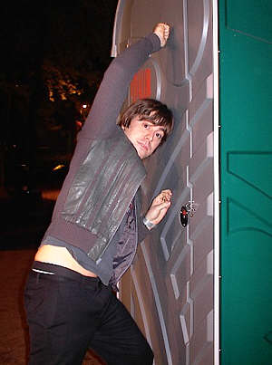

Goran Kajfeš, interview
Goran, what have you been up to lately (new releases, concerts...)?
I have toured with my band in Mexico, Morocco, Spain etc and I have also played a lot with another jazzband that I´m a part of called Oddjob. We are going to record a new album in December and I have recorded an album with a ska band called Jobalites. We recorded 19 songs in one day. To be released beginning of next year. I´m also writing new songs for my next soloalbum.
Your debut album "Home" has been quite a success? Could you tell us alittle about your beginnings?
Don´t know what to say about this except that it took a while experimenting in the studio until me and David (producer) found out what it was going to sound like.
On the follow up, "Headspin" it seems that you moved a little from that post-Miles-electronica sound that was there on Home, and that you are closer to building your own, more authentic sound. How would you describe your music style?
Sorry, don´t know how to describe it.
Your father, Davor Kajfes, is also a jazz musician (coming from Croatia). Was he the reason you started to play trumpet in the first place?
Both my parents are musicians and of course they encouraged me to start playing an instrument. I grew up with a lot of music at home. They both play piano so I wanted to play something different from that so I chose the trumpet.
Is Sweden a good place for a young jazz musician?
It is tough being a jazz musician anywhere in the world. You have to do a lot of different things to make your living. But anyway I think Sweden is a lot better than many other places. Musically it´s a great climate for jazz in Sweden right now with many great musicians and bands.
In 2004 you have started your own recording company, Headspin Recordings. Is it still active?
For sure. It´s not a jazz label though. We release all kinds of music. The latest release was Dieter Schöön a couple months ago. You can see our releases on www.headspinrecordings.com.
Aside from the solo carrier, you are part of few musical projects. Could you tell us more about them...
Well....I play on many albums as a studiomusician, I write music for film and tv, as you already know I have my own record label, for the moment I play in bands like Oddjob, Nacka Forum, Jobalites, Eric Malmberg, Club Killers. I had a music club called Ugglan but not any longer and I´m going to record an album with a brassband.
When was the last time you visited Croatia?
Last year I was on holiday with my family on the Island of Brac. Great!
What are your plans for coming period(new album, tour...something else)?
Think I answered that in earlier questions...but first of all next week I´m going to Brazil to play. Oh yes!
Is there a chance to see you play soon in Belgrade?
I would love to but no plans right now!
Thank you very much for taking the time out to answer to our questions. We wish you all the best and hope to see/hear you soon. Have fun in Brasil!
Thank you Dusko! (same name as a great trumpet player!!)
***
Više o Goranu Kajfešu u našem uvodnom tekstu.
 RSS feed
RSS feed
 sadržaji se objavljuju pod
sadržaji se objavljuju pod
Komentari
voleo bih da cujem ovo muziciranje
ljubar | 29.10.07 12:51